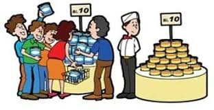
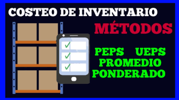
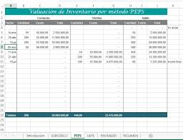
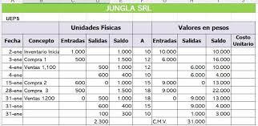

Retos 11-15
Tema no.11 mercados
Definición breve: Conjunto de personas o empresas con necesidades o deseos que pueden ser satisfechos mediante bienes o servicios, y que tienen la capacidad y disposición para comprarlos.
Como se aplica en la vida real: En la vida diaria, un mercado puede ser físico (como un supermercado o feria) o digital (como una tienda en línea), donde compradores y vendedores interactúan. Por ejemplo, una empresa lanza un nuevo producto estudiando primero si existe un mercado interesado en él.

Con que tema se relacionan: El concepto de mercado se relaciona directamente con la economía porque es uno de los pilares fundamentales sobre los que se basa el funcionamiento económico de cualquier sociedad.
#
Tema no.12 mercado meta
Definición breve: Grupo específico de consumidores al que una empresa dirige sus productos, servicios y estrategias de marketing, debido a que son quienes tienen más probabilidades de comprarlos.
Como se aplica en la vida real: Por ejemplo, una marca de ropa deportiva puede enfocar su publicidad y productos principalmente en jóvenes entre 18 y 30 años que practican deportes, en lugar de intentar atraer a todos los públicos. Esto permite diseñar mensajes y ofertas más efectivas y ahorrar recursos.
Con que tema se relacionan: El mercado meta se relaciona con la segmentación de mercado porque para poder identificar y definir un mercado meta es necesario primero dividir el mercado total en grupos más pequeños y homogéneos.
#
Tema no.13 Los diez pecados capitales del marketing
Definicion breve: Son errores bien graves que cometen muchas empresas en sus estrategias de marketing como por ejemplo no conocer a sus clientes, no diferenciarse de otros negocios, no capacitar a su gente o simplemente no tener un plan claro.
Como se aplica en la vida real: Si una empresa no escucha lo que quiere el cliente o no se adapta a los cambios, puede perder ventas fácil por ejemplo un negocio que sigue vendiendo lo mismo de siempre sin mejorar, mientras otros innovan, se queda atras.
Con que temas se relaciona y por que: Se relaciona con los mensajes publicitarios, porque si uno de esos mensajes esta mal hecho es uno de esos pecados, tambien con el mercado meta, porque si no sabes a quien le vendes estas fallando desde el inicio.
#
Tema no.14 Los medio publicitarios
Definicion breve: Son los canales donde se transmiten los anuncios. Puede ser la tele, el radio, el face, el insta o incluso los volantes. Todo lo que se usa para que el anuncio llegue al cliente.
Como se aplica en la vida real: Si una tienda vende ropa juvenil, lo logico es que se anuncie en Instagram o TikTok, no en el periodico. Escoger el medio correcto hace que el mensaje si llegue a quien se quiere.
Con que temas se relaciona y por que: Con la publicidad, porque sin medios la publicidad no se puede mostrar. Tambien con el mercado meta, porque uno elige el medio segun el publico al que quiere llegar.

#
Tema no.15 Metodos de valuacion de inventarios (PEPS, UEPS, Promedio)
Definicion breve: Son formas de calcular cuanto valen los productos que uno tiene guardados en la bodega.
• PEPS: se venden primero los que entraron antes.
• UEPS: se venden primero los que entraron ultimos.
• Promedio: se saca un costo promedio entre todos.

Como se aplica en la vida real: Un minisuper usa PEPS pa' que no se le arruinen los productos viejos. Otras empresas usan UEPS si quieren reflejar los precios mas recientes. Todo esto cambia cuanto ganan o cuanto se paga de impuestos.

Con que temas se relaciona y por que: Con el costeo, porque ayuda a saber cuanto cuestan las cosas que uno vende. Tambien con el libro caja, porque si no se lleva bien, no se sabe cuanto entra ni cuanto sale.
